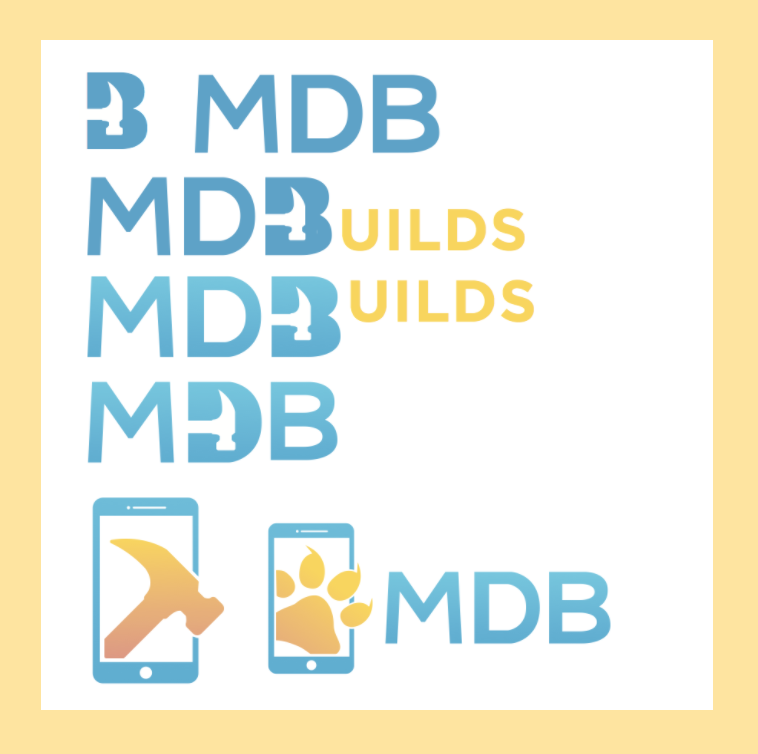

Aux: UI/UX Design
Aux, a mobile app, revolutionizes how users share music by making it easy to create live collaborative playlists.

----------------
Preserve: UI/UX Design & Frontend
Preserve is a mobile application that allows users to more easily keep track of their fresh produce and pantry items and when they will expire. It is a food management app that makes handling expiration dates faster and easier by scanning receipts through OCR technology and providing timely notifications.

----------------
MDB Logo: Logo Design
SCOPE: college club logo
ROLE: logo design and creation
DURATION: november 2017
Mobile Developers of Berkeley, UC Berkeley's premier mobile incubator, rebranded as one of the steps towards becoming an app development agency. As a result, I was tasked with the creation of a logo for the new agency: MDBuilds.

----------------